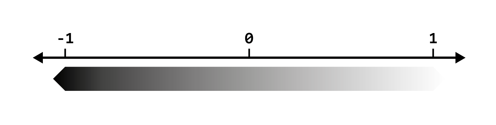
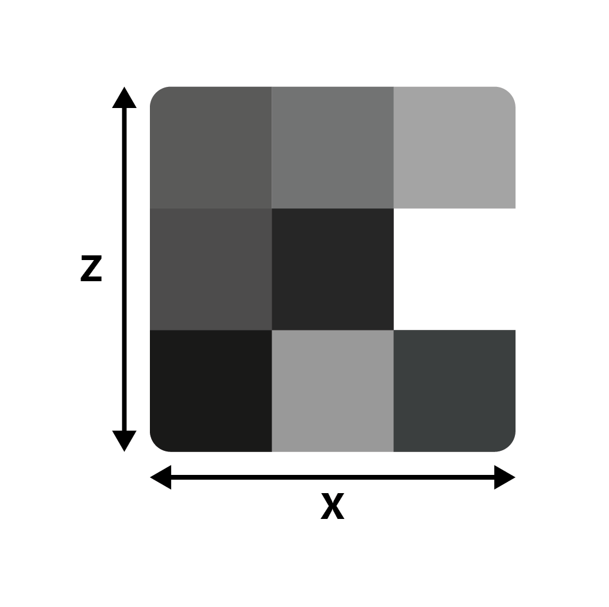
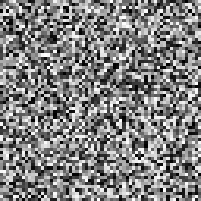
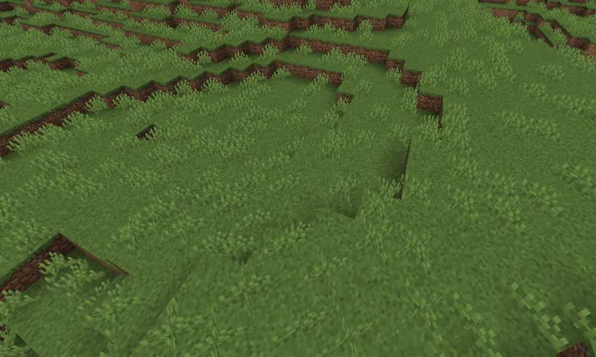
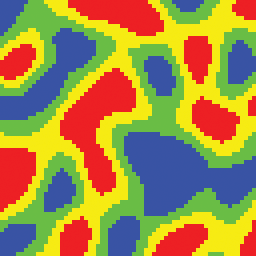
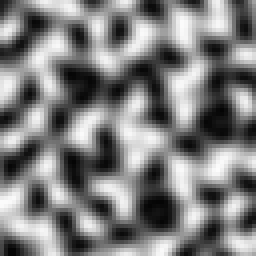
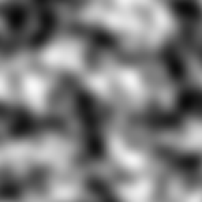
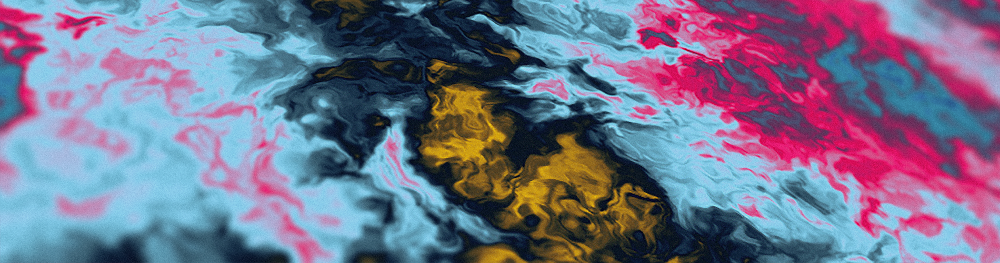
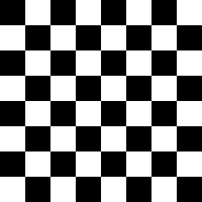

Samplers & Noise¶
{kind=link}
What is Noise?¶
In Terra, noise does not refer to sound you can hear, but rather a series of randomly* generated values. These values are produced by something we will call a noise sampler - which is just a mathematical function that turns an input into a randomized numeric output.
Why is Noise Important?¶
Noise is a central concept in Terra, because just about every random aspect of world generation is influenced by noise to some degree. Having a basic understanding of noise and how to manipulate it will give you insight into how worlds are randomly generated by Terra, and is an important skill to have if you want to develop your own config packs.
Before learning how to manipulate noise, you should first have an understanding of the underlying concepts outlined here. Don’t worry, we won’t throw anything too complicated at you for now! Having a firm grasp on noise will bring you closer to controlling exactly how world generation will behave, which is why having a foundational understanding is important.
Here is just a short of list of things heavily influenced by noise in Terra:
The placement of biomes in the world.
How terrain is shaped.
How flora and trees are distributed.
Noise Basics¶
Here we will cover some key points is grasping noise in Terra. If you feel like certain concepts are too difficult to understand, feel free to skim over them for now, and revisit them later.
Demonstration¶
Let’s begin with a demonstration displaying the most basic process of ‘creating’ noise. We will use a theoretical sampler implementation of a noise algorithm called *white noise*, and generate some values with it. Explaining how exactly our white noise sampler creates these values is outside the scope of this guide, however is not essential in understanding the general idea.
We will perform a couple samples with our sampler, using numbers 1 - 10 as an input, and record the outputs as both a number and a shade from black to white. Conventionally, the values outputted by a noise sampler will be within a range of -1 to 1. We can visualize the relationship between the value and shade on a number line as such:
{kind=link}
Note
Typically outputs will produce decimals with high precision, however we will round the output to one decimal place for simplicity. Input numbers also do not have to be whole numbers, this means noise samplers will still work the same way with inputs like 1.5. Again we’ve just used integers here for the sake of demonstration.
Model
Results

Simple, right? All our noise sampler does is convert one value to a randomized value.
Determinism¶
One requirement of samplers is that the output must be *deterministic*. This just means that given any input, the output must always be the same. Because of this, we can reliably re-produce any ‘random’ results we get from noise samplers by feeding it the same input.
Going off the results above, when passing the number 5 to our white noise sampler, we will always get the number
0.4 back.
Seeds¶
Sometimes, we want to use the same input, and same noise sampler, but for multiple random unique outputs. In that case,
we can use a seed in our noise sampler. Seeds are basically a way of getting a whole new uncorrelated set of random
values from the same inputs + noise sampler. Unlike the input value, seeds must be a whole number, meaning 5324 would
be a valid seed, but 231.23 would not.
Expanding on our basic model of noise generation we have:
Here is an example using two different seeds to produce different outputs, using the same inputs and noise sampler from the example above.
Seed = 0
Seed = 1

One usage of seeds that you might be familiar with is minecraft world seeds. A vanilla minecraft world seed gets inserted into the many noise algorithms that govern vanilla world generation, resulting in completely different worlds per seed (since each noise algorithm will return a completely new set of values for each unique seed). Combined with determinism, we’re able to produce new unique randomized worlds by picking a random seed, while also being able to generate the exact same world* provided we use the same seed.
Vanilla World Generation Trivia
In previous versions of Minecraft, Some noise algorithms used the same seed for every world (meaning they don’t factor in the world seed), which resulted in every world generating a certain characteristic the exact same way. One notable example - the algorithm that controls bedrock formation used a static seed for every world, leading every world to share the same random configuration of bedrock.
Within Terra, all samplers use a combination of the world seed and a value called salt, to determine its own seed. Salt is a number you can specify when defining noise sampler configurations, and simply gets added to the world seed. This allows multiple noise samplers to produce different sets of output values, while sharing the same noise algorithm.
Flavors of Noise¶
There are many variants and implementations of noise samplers, such as our white noise sampler above. Each has their own quirks, behaviors, and applications, however in general they all follow the same basic principles outlined here. We will cover a couple of these variants later down the line, including samplers that don’t necessarily produce random noise.
Here is a small list of notable noise algorithms that are commonly used in Terra noise samplers:
Simplex Noise
Cellular / Voronoi / Worley Noise
White Noise
Value Noise
Multidimensional Sampling¶
The phrase ‘multidimensional noise’ may sound intimidating, but don’t worry, it’s a fairly simple concept to understand. Simply put, multidimensional noise involves providing multiple input values per ‘sample’, rather than just one. In every example thus far, we have only provided one value for each noise ‘sample’ (excluding the seed), meaning we are conceptually only sampling in one dimension, however we can go further.
The simplest example of multidimensional noise is just adding one extra input to our noise sampler, for a grand total
of 2 inputs. Conveniently, that gives us 2 dimensions, thus we can easily display a set of 2D samples in a grid. We will
refer to the first input as X, and the second as Z.
In a new example, let’s use a range of 1 - 3 for both X and Z, giving us a total of 9 samples (3 x 3). We will only
label the X & Z axes for the sake of simplicity.
Two Dimensional Model
Results
{kind=link}
As you can see, all we have done is added another dimension to our white noise sampler, allowing for noise to be depicted as a 2D grid, rather than a list of values.
Taking this experiment further, let’s use a larger sample size of 64 x 64:
What we have done here is essentially produced a random image using our white noise sampler. By default, we will assume the above format of visualizing noise in 2D as an image, where each output value represents a grayscale pixel.
Higher Dimensions¶
Many noise algorithms support an arbitrary amount of inputs, meaning that we can sample noise in any number of
dimensions. Typically, we will only use up to three dimensions in Terra, where each input corresponds to the position on
each axis X, Y, and Z.
Segmentation¶
Segmentation in this context refers to splitting a set of values into several parts based on the range each value fits in to.
Note
This is not a concept specific to noise, but is something to keep in mind, as it is commonly used in conjunction with noise and world generation.
The simplest form of segmentation is thresholding, which simply involves separating a set of values into two groups
based on whether they’re higher or lower than a number. An example of thresholding would be outputting a value of -1
for input values less than 0, and outputting a value of 1 for every other input, however the output could be
anything, such as true / false depending on use.
Applying a threshold to every pixel of an image where input = intensity of the pixel, output = either a black or
white pixel, and threshold = 50%, we get the following result:

We can represent thresholding mathematically as a piecewise function:
f(x) =
{
-1 if x < threshold
1 if x >= threshold
}
Most applications of segmentation in Terra are essentially fancy piecewise functions like the one above, written programmatically.
Segmentation is a useful concept to understand when combined with noise, as it allows us to split noise into distinct values. We will cover an example of segmented noise and an application of it in the following section.
Applying Noise to World Generation¶
You might be wondering: How does this information translate to generating an entire world? Before we jump straight from simple noise generation to generating entire worlds, let’s just keep it simple and apply the knowledge we’ve covered thus far to a simple application.
Planting Grass¶
Let’s say we have a patch of land, and we want to generate some tall grass on it, how would we determine where the grass goes? The first thing we will want to do is define some basic rules for generating grass, before we get to the part where noise is involved:
Grassmay only generate on top ofGrass Blocks.Grassmay only replaceAir.
Simple enough, now we know that grass will only generate where appropriate. With only these rules however, we would end up with grass on top of every single grass block! What if we only wanted it on some grass blocks? Well we can use our white noise sampler for that!
For each block in the area grass will generate, we’ll feed the X & Z world coordinates as well as the world seed into our
2D white noise sampler. This will provide us a random value (from -1 to 1 as discussed) for each block . We will then use
that output value to determine whether we place some grass or not. The way this will be determined is by simply
thresholding it! We’ll start with a threshold of 0, where any value below our threshold will mean
place grass.
Grass Placement Model
Results

As you can see, we now have a method of randomly determining if grass should be placed or not for any given X-Z coordinate in any world. We can even reduce / increase how much grass we get by modifying our threshold value:
Threshold = -0.25

Lowering the threshold from 0 to -0.25 results in less grass because we are effectively removing the values between
-0.25 and 0 from falling below the threshold. Conversely, increasing the threshold will result in more grass, as
more values will fall below the threshold.
Combining this with our rules we established earlier, we now have a method of checking for any block whether it should be grass or not.
{kind=link}
Coherent Noise¶
Thus far, we have only covered noise that outputs seemingly random tv-static-like values, which is fine for simple applications like the grass example above. But how can we get noise capable of producing smooth rolling hills, vast mountains, and other structured random generation? Let’s place the white noise sampler under the category ‘random noise’, and introduce a new category of noise samplers called ‘coherent noise’.
What’s The Difference?¶
The main difference that separates random noise from coherent noise is that while random noise samplers produce noise with no apparent structure, coherent noise samplers produce ‘structured’ noise, where adjacent input values produce similar output values.
To get a better idea of the difference, here is a visualization of two different 2D sampled noise samplers that both share the same inputs:
Random
Coherent

As you can see, the coherent noise example has a discernible structure where output values are smooth, compared to the random noise example where there’s no apparent structure. The coherent noise algorithm used in the sampler above is known as simplex noise, and is one of the many flavors of noise provided in Terra.
- Noise Samplers
- Random Noise Samplers
White Noise
- Coherent Noise Samplers
Simplex Noise
Noise Segmentation¶
Now that we have introduced coherent noise, we can provide a better visual example of noise segmentation. Let’s use the following list of colors and distribute them across a noise sampler via segmentation:
colors:
- Red
- Yellow
- Green
- Blue
Since we know that noise sampler outputs will generally be between -1 and 1, we will need to assign each
color its own a range within the output range [-1, 1]. To do this, it’s helpful to visualize things on a number
line like so:
{kind=link}
From this we can intuitively see that blue corresponds to the range [-1, 0.5], green to [-0.5, 0] and so on.
Thankfully, you won’t ever have to define every range required for segmentation by hand, as Terra will automatically
segment noise for you, but it’s still useful to get an idea of what is happening behind the scenes. Let’s finally
segment some simplex noise by categorizing the output values into our colors based on the range they fit in.
Raw Noise Values
Segmented Noise
This is where the usefulness of segmentation comes in - we can treat these colors as anything, whether that is a set
of biomes, a pattern of blocks, or anything else that requires a list and a sampler. For example, red could
represent a tropical island biome, yellow a beach, green shallow ocean, and blue deep ocean. Generally lists like
this will be defined as a weighted pool such that you can easily weigh certain items to take up more
space as needed. As an example, here is what our new biome list may look like:
biomes:
- TROPICAL_ISLAND: 1
- BEACH: 1
- SHALLOW_OCEAN: 1
- DEEP_OCEAN: 1
Generalizing the Sampler¶
So far, we have defined the concept of a ‘noise sampler’ as something that takes numerical inputs and a seed, and produces a numerical output dubbed ‘noise’. We can make a more generalized definition of a sampler that encapsulates noise samplers:
A function that takes a seed and dimensional coordinates, and outputs a numerical value.
In a practical sense, samplers provide a way of mapping a set of world coordinates in any given world (based on the seed) to a set of numerical values.
- Samplers
- Noise Samplers
- Random Noise Samplers
White Noise
- Coherent Noise Samplers
Simplex Noise
Configuring Samplers¶
Now that we have covered some essential topics regarding samplers and noise, let’s talk about creating, configuring, stretching, squishing, tweaking, and remixing it!

Sampler Configs¶
So how exactly does this information apply to Terra configuration? This is where we will introduce
sampler configs. When configuring config packs many options will require a sampler config. The simplest
sampler config just requires a type, which defines what kind of sampler to use.
Here what that would look like:
type: <Sampler Type>
We can bring back our white noise sampler from earlier, which has type WHITE_NOISE, and insert it into the template
above, giving us the following sampler config:
type: WHITE_NOISE
Sampler Parameters¶
In addition to specifying the type of sampler to use, the type key will also determine what other keys become available
as either required or optional within the sampler config. Some types will have additional keys that need to be
specified to function properly, and others like WHITE_NOISE don’t require anything extra.
One example of an optional key available when specifying the WHITE_NOISE type is salt. The function of salt is
covered here if you need a refresher. Here is what the above example looks like with the salt key added:
type: WHITE_NOISE
salt: 2321
Another thing to note is that most optional parameters have a pre-defined default value that’s set when not specified.
When the salt key is not included in a sampler config, it will default to its predefined value 0.
Noise Tool¶
Now that we know how to write a simple sampler config, we can use a handy program aptly named the Noise Tool to preview what our config looks like.

The Noise Tool was specially designed for creating, previewing, and modifying samplers, and is also what was used to generate every image of noise used on this page. You can find the Noise Tool on GitHub - Source / Download
Tip
We suggest that you follow along the rest of this section with the Noise Tool, so you can try out parameters get the hang of writing your own sampler configs. Playing around and experimenting on your own is a great way of learning what each parameter does, and will give you an intuition on how you can fine tune them to your advantage.
For a complete list of sampler types and their parameters available in Terra, please refer to the
Sampler Configuration page.
Frequency¶
You might be wondering how we control just how large or how small details produced by samplers are - This is where the concept of frequency comes in. Frequency is a number that modifies the ‘scale’ of sampler outputs, where higher frequency produces more ‘zoomed out’ outputs, while lower frequency results in more ‘zoomed in’ outputs.
Let’s preview some comparisons of a simplex noise sampler with varying frequencies:
2x Frequency
1x Frequency
0.5x Frequency

As a general rule of thumb:
Higher Frequency
Zooms out.
Produces smaller & closer details.
Increases the density of ‘points’ per unit of space.
Lower Frequency
Zooms in.
Produces larger & more spread out details.
Decreases the density of ‘points’ per unit of space.
In a Sampler Config¶
Frequency can be defined for applicable typess via the frequency key like so:
type: <Sampler Type>
frequency: <Desired Frequency>
Something to note is that tweaking frequency is only really useful for samplers in the coherent noise category. You’re able to modify the frequency of random noise based samplers, however they don’t have the property of being able to scale like coherent noise samplers do. There isn’t much reason to scale the frequency of a random noise sampler, as doing so functionally has same effect as changing the seed.
Under The Hood - How frequency works
The math behind frequencies is very simple: multiply the input coordinates of a sampler by the frequency. Here is a model of the process:
For example, if we have a frequency of 2, and want to sample the coordinates (X = 3, Z = 2), first the coordinates will be multiplied by the frequency 2, giving us the scaled coordinates (X’ = 6, Z’ = 4). This new set of coordinates will then be input into the sampler which will then give us the final output value.
Based on this logic, we can deduct that the input:
(X = 3, Z = 2, Frequency = 2)
Will give the exact same output when inputting:
(X = 6, Z = 4, Frequency = 1)
Higher frequencies effectively produce faster changes when incrementing input coordinates, which is why higher frequencies make details closer and therefore smaller.
This concept in geometry is known simply as scaling, and can also be thought of as applying a scale transformation to the coordinate space of the world before passing it into the sampler.
Samplers In Context¶
To get a better idea of how sampler configs get used in packs, Here is what one looks like in the context of a palette configuration. The sampler config is highlighted.
id: DIRTY_GRASS
layers:
- # Single layer of grass and dirt blocks
layers: 1
materials:
- "minecraft:grass_block": 1
- "minecraft:coarse_dirt": 1
sampler:
type: OPEN_SIMPLEX_2
frequency: 0.05
- # Two layers of dirt below the top layer
layers: 2
materials: "minecraft:dirt"
- # Then finally stone
layers: 1
materials: "minecraft:stone"
The usage of noise here controls the arrangement of the weighted pool of materials. To get a better idea of the relationship, here is a screenshot of a biome which uses the above palette configuration:

This is also another great example of noise segmentation in action with weighted pools. You can
see our OPEN_SIMPLEX_2 sampler has been segmented equally between grass blocks and dirt, giving us a nice random
pattern of surface blocks in the biome.
Fractalization¶
In some situations, coherent noise on its own may be far too smooth and uniform to produce ‘realistic’ results. Looking at the images above, you may notice plain simplex is quite blobby, which may not be desired for applications where more detail is required. This is where fractalizers come in handy.
The premise of fractalization is that we can produce more detail by combining the outputs of multiple of the same sampler together, where each successive sampler (called an octave) has a higher frequency and a scaled down output value (making it contribute less to the overall output). This process of progressively stacking incrementally smaller layers to produce a fractal effect is referred to as fractal Brownian motion (Commonly abbreviated as fBm).
It might sound quite complicated in writing, so we can demonstrate this concept visually to get a better idea of what’s happening:
No Fractalization

2 Octaves
3 Octaves

4 Octaves

As you can see, the more octaves we add, the more detailed the noise gets. This is the main application of fractalization - to produce more detail, especially at lower frequencies where detail is sparse. You won’t have to worry about the exact math behind how each octave gets stacked, as Terra will handle all of that for you.
In a Sampler Config¶
When fractalizing sampler configs, we define the fractalizer as its own sampler config, which takes the target sampler config as a parameter. The syntax for this is as followed:
type: <Fractalizer Type>
sampler:
type: ... # Sampler config to be fractalized
As you can see, we have the main sampler config for our fractalizer, and a second sampler config nested inside under the
sampler key. The sampler key is the only required parameter for all fractalizers.
Based on this template, we can create a real sampler config. Let’s use the FBM fractalizer, with an input sampler with
type OPEN_SIMPLEX_2:
type: FBM
sampler:
type: OPEN_SIMPLEX_2
Pretty simple, all we’ve done is passed some simplex noise into the FBM sampler. Fractalizers have a couple
additional parameters, including octaves, lacunarity, and gain. Here is another example config with those
parameters already defined:
type: FBM
sampler:
type: OPEN_SIMPLEX_2
octaves: 3
lacunarity: 2
gain: 0.75
Feel free to preview this config in the Noise Tool, and have an experiment with each parameter to see what they all do. To see all available fractalizers and their parameters, please refer to the Sampler Configuration page.
Domain Warping¶
{kind=link}
Similar to fractalization, domain warping involves manipulating the input, aka the domain , before it’s passed to the sampler. More specifically, the domain of a sampler will be warped via translation by the output of a secondary warping sampler.
To demonstrate domain warping more clearly, let’s take a 64 x 64 square of samples in a space. Our sampler to be warped will be a checkerboard pattern, and our warping sampler will be some basic simplex noise.
Sampler To Be Warped
Warping Sampler

When domain warping the checker board sampler by the simplex we get the following result:

As you can see, our once perfectly square boxes have been contorted out of shape by the warp sampler.
In a Sampler Config¶
To use domain warping, we will need to set the type to DOMAIN_WARP, and specify two additional required keys
sampler and warp. As you may have already guessed, both sampler and warp need to be set to a sampler config,
similar to how fractalizers accept an input sampler:
type: DOMAIN_WARP
sampler:
type: ... # Noise config to be warped
warp:
type: ... # Warp noise config
Additionally, we can specify amplitude which determines how much the sampler defined in sampler will be warped by
the warp sampler. Here is an example of a real sampler config which warps low frequency simplex with another simplex
sampler:
type: DOMAIN_WARP
sampler:
type: OPEN_SIMPLEX_2
frequency: 0.005
warp:
type: OPEN_SIMPLEX_2
amplitude: 20
Again it’s recommended that you try out this sampler config in the Noise Tool and see what changing each
parameter does - What happens if you use WHITE_NOISE as a warp sampler instead?
Under The Hood - The Math Behind Domain Warping
To get an in depth understanding of what’s happening, let’s explain the formula that is used to achieve domain warping:
We will define
sampler(coordinate)as our sampler to be warped, wherecoordinaterepresents the input values (such as the familiar X and Z coordinates).To translate
sampler, we can simply add some translation to the input:sampler(coordinate + translation). Translating simply means moving left / right / up / down / etc.We can then define
warp_sampler(coordinate)as our warping sampler.If we make
translationourwarp_samplersampler then now thecoordinateofsamplerwill be translated bywarp_samplerlike so:
sampler(coordinate + warp_sampler(coordinate))
Finally, we can multiply the output of
warp_samplerby a valueamplitude, which will control how ‘strong’ the warping will be, to give us the final formula:
sampler(coordinate + warp_sampler(coordinate) * amplitude)
A detail to note is that there will typically be several copies of warp_sampler for each coordinate for the domain,
where each copy is just salted differently. Without this, each coordinate would be warped by the same value, resulting
in translating each axis equally, resulting in anisotropy.
Sampler Composition¶
Because some keys such as sampler and warp accept a sampler config, something we can do is feed a
domain warp sampler into another domain warp sampler. In fact, we could feed any sampler
into any other one, given it has a parameter that accepts a sampler config. This is incredibly powerful, as it
allows for constructing complex highly configurable systems of samplers. Here is an example where we domain warp some
fractalized simplex by more fractalized simplex (which has also been domain warped by more…
fractalized simplex!):
type: DOMAIN_WARP
amplitude: 300
sampler:
type: FBM
sampler:
type: OPEN_SIMPLEX_2
frequency: 0.002
warp:
type: DOMAIN_WARP
amplitude: 20
sampler:
type: FBM
sampler:
type: OPEN_SIMPLEX_2
frequency: 0.003
warp:
type: FBM
sampler:
type: OPEN_SIMPLEX_2
frequency: 0.02
Conclusion¶
Now that you’ve got an idea of what noise is, how it works, and a couple ways of configuring it, you should now be equipped with the necessary knowledge to start configuring your own fancy samplers for use in your own customized world generation! For more information on the available samplers in Terra, please refer to the Sampler Configuration page. If you have any further questions, feel free to ask us in our Discord!